Qui suis-je
Je m'appelle Adrien Mikolajczyk et je suis un développeur passionné, créatif et rigoureux. J’ai récemment validé mon titre de Concepteur Développeur d’Applications, ce qui confirme ma capacité à concevoir, développer et déployer des solutions web complètes, de l’analyse du besoin à la mise en production. Mon approche allie curiosité, autonomie et sens du détail, ce qui me permet d’écrire un code propre, structuré et maintenable. J’accorde une attention particulière à la performance, à l’accessibilité et à l’optimisation des interfaces, afin d’offrir la meilleure expérience utilisateur possible. Toujours en quête de nouvelles connaissances, j’aime explorer de nouvelles technologies et améliorer continuellement mes pratiques de développement.
Développement
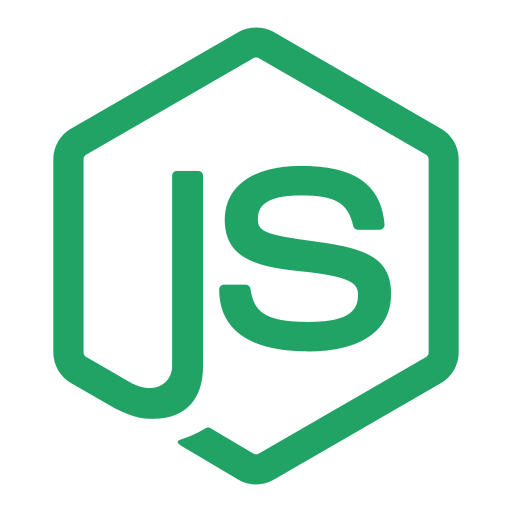
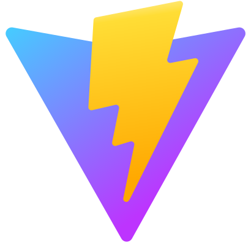
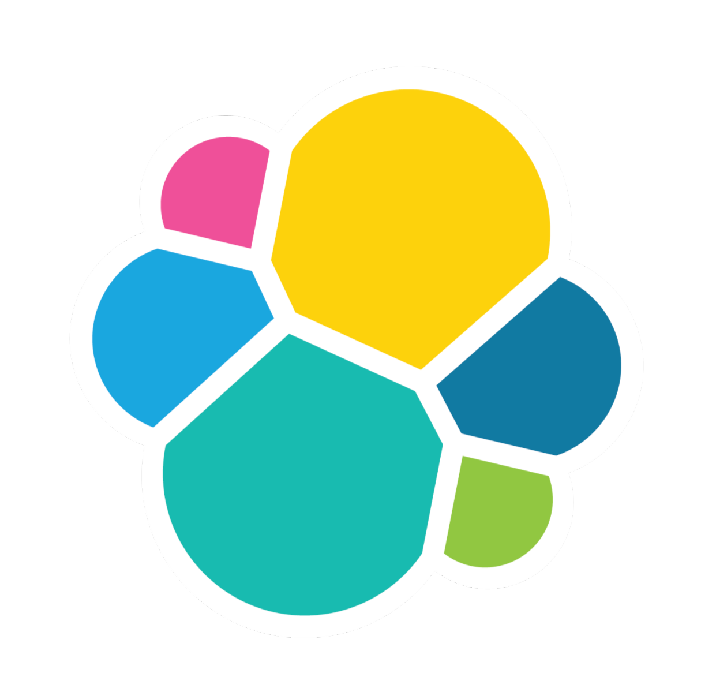
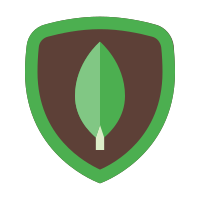
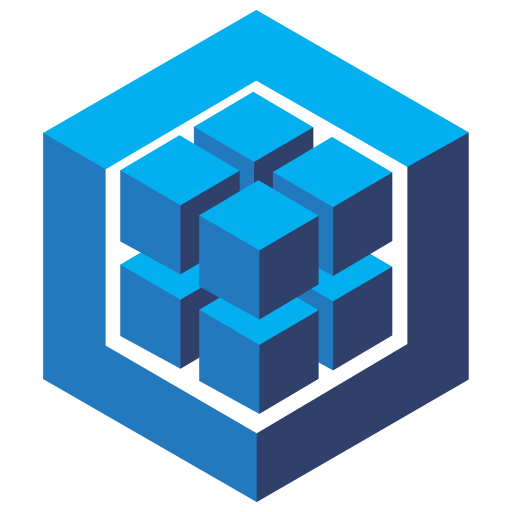
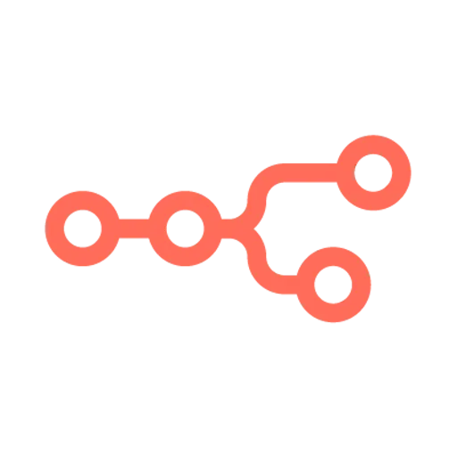
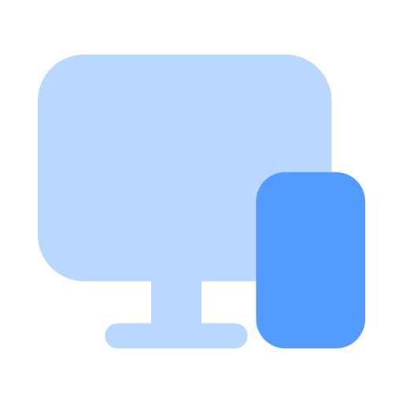
Fort de mon titre professionnel de Concepteur Développeur d’Applications, je maîtrise un large éventail de technologies web modernes. En front-end, je développe des interfaces dynamiques et réactives avec React.js et Vite, en veillant à la performance et à l’accessibilité. En back-end, j’utilise Node.js et Express.js pour créer des API robustes et sécurisées, en m’appuyant sur des bases de données SQL (MySQL avec Sequelize) et NoSQL (MongoDB, Elasticsearch). J’intègre également des outils d’automatisation comme n8n pour optimiser les flux de travail et connecter différents services. Cette polyvalence me permet de gérer des projets de bout en bout, de la conception à la mise en production.
Outils
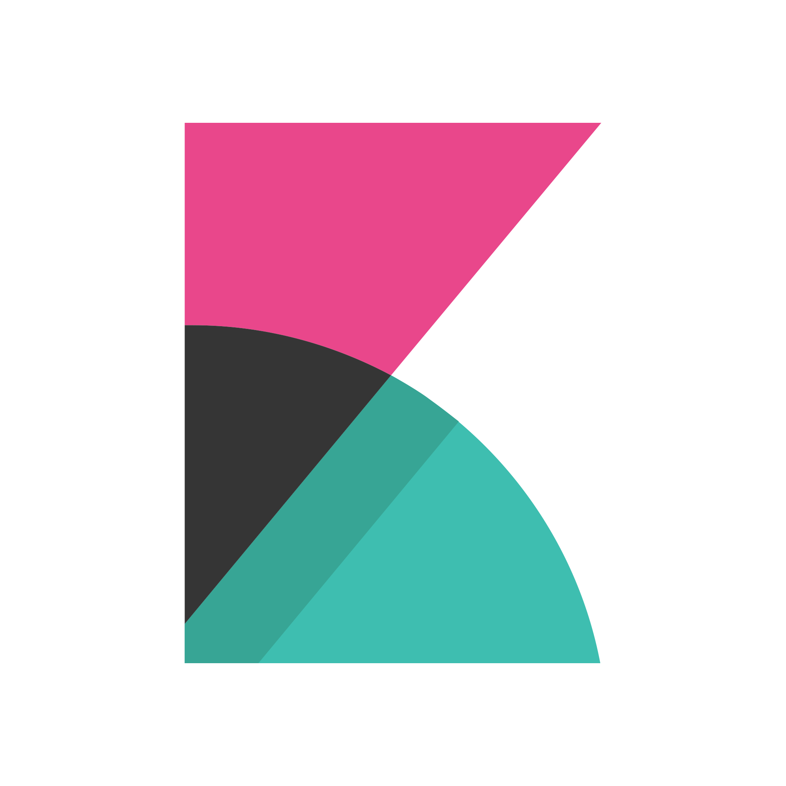
En complément du développement, j’utilise un ensemble d’outils qui renforcent la qualité et la productivité de mes projets. Figma me permet de concevoir des interfaces UI/UX claires et ergonomiques, tandis que GitHub facilite la gestion de versions et le travail en équipe. Docker garantit la conteneurisation et la portabilité de mes applications, et Kibana me permet d’analyser et de visualiser les données issues d’Elasticsearch. Pour l’organisation et la gestion de projet, j’utilise Notion, et j’automatise certaines tâches avec n8n et Make, comme l’envoi de notifications, d’e-mails ou la mise à jour de bases de données. J’intègre également l’utilisation de l'IA dans mon flux de travail pour m’assister dans la rédaction, l’optimisation de code et la recherche de solutions techniques. L’ensemble de ces outils me permet de concevoir des projets performants, structurés et facilement maintenables.
Portfolio
Cozy - Product Page
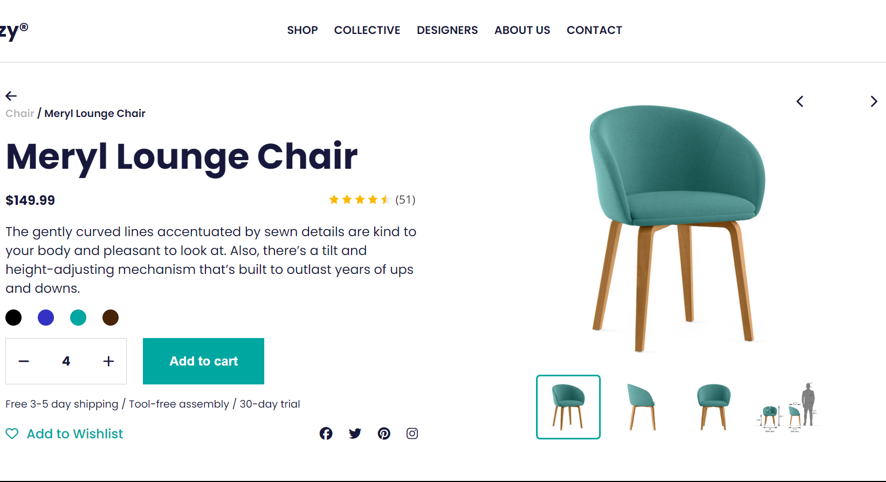
J'ai codé cette page produit à partir d'une maquette Figma en HTML, CSS et JS. Il est possible de faire défiler les images et d'ajouter des articles au panier
CV Numérique
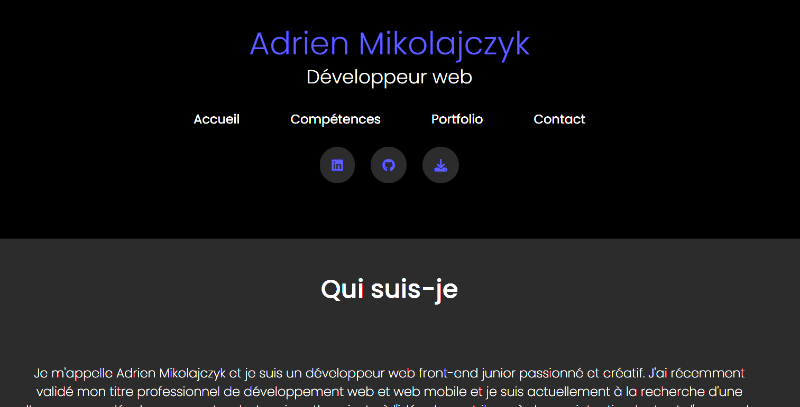
Ce CV numérique à été réalisé en HTML, CSS et JS. J'ai également utilisé Make sur le formulaire de contact pour stocker automatiquement les données dans un Sheet, et envoyer un message sur un canal Slack dès qu'il y a un nouveau message.
Vaultflow - Saas Homepage
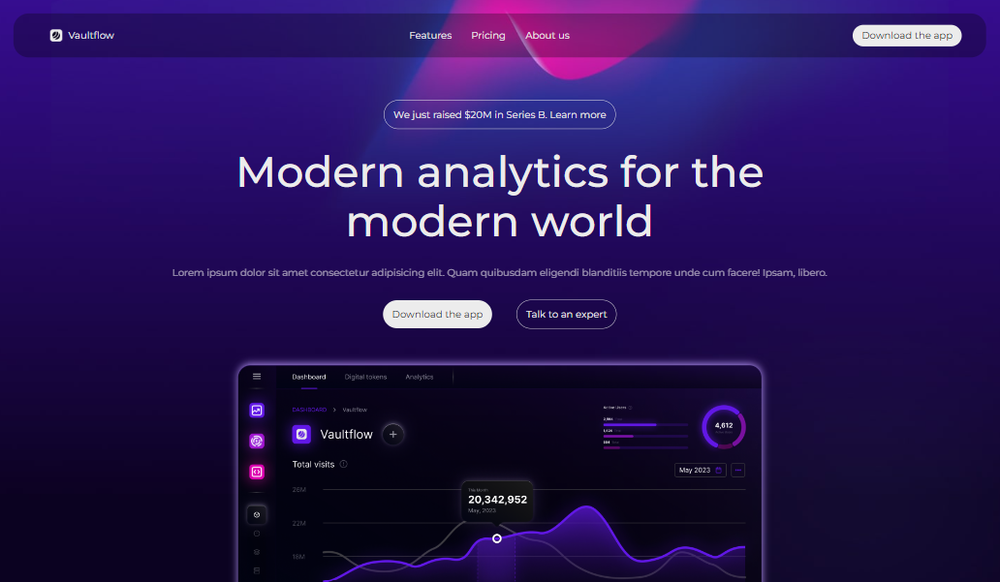
J'ai réalisé cette page d'accueil pour m'entrainer à faire des vérifications de données d'un formulaire en Javascript. Ce projet n'est pas encore fini.
Notion - Organisation personnelle
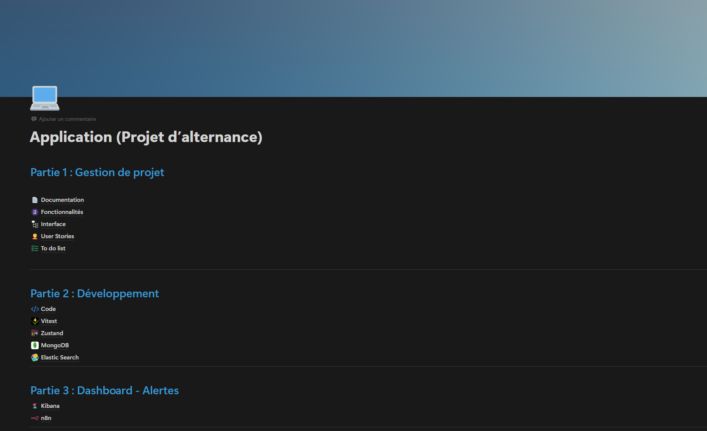
Voici l’espace Notion que j’ai conçu et enrichi tout au long de mon alternance CDA. Ce support permet de visualiser concrètement mon sens de l’organisation, mon autonomie et ma capacité à mener à bien des projets complets (toutes données confidentielles ou sensibles ont été retirées).
Plan&Go - Site de réservations
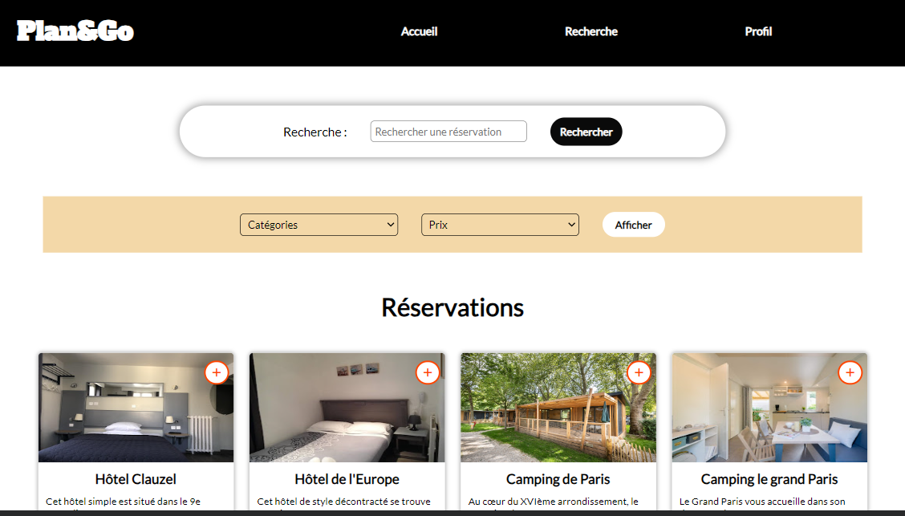
Plan&Go est un site de recherche et de réservations en ligne. Ce projet comporte du HTML, CSS, JS, PHP et MySQL. Je l'ai réalisé pendant toute la durée de ma formation.